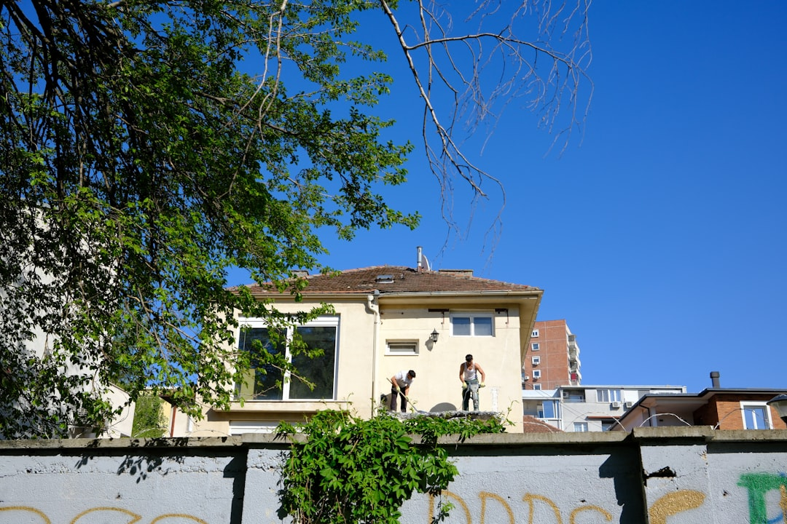

Brisbane home renovation costs vary widely by scope. Kitchen upgrades generally start in the low tens of thousands, bathrooms tend to sit a little below that, and full-home renovations or extensions run into the hundreds of thousands depending on size, structure and finish. Brisbane leads Australia with over $1.08 billion in approved renovations, and demand is rising ahead of the 2032 Olympics. Ranges here are general industry guidance, not fixed prices, so the reliable figure always comes from written quotes tied to your own home, scope and site.
For local buyers, brisbane home renovation costs sets out how renovation budgets are built in Brisbane, the ranges typical for each project type, and the factors that move the final number
Brisbane Home Renovation Costs Explained
No two projects price the same way, because a renovation budget is built from the ground up around your home, not from a catalogue rate. The main levers are scope, the age and structure of the dwelling, the standard of finishes and the amount of trade work involved. A cosmetic refresh that keeps existing plumbing and wiring in place sits at one end of the range. A structural project that moves walls, rewires and re-plumbs sits well above it.
Brisbane adds its own factors. Classic Queenslanders bring timber restoration, VJ walls and raise-and-build-under work that a modern brick home does not. The subtropical climate, council requirements and heritage overlays all shape what is possible and what it costs. According to the Housing Industry Association, materials and labour have been a steady pressure on renovation pricing, and local guidance reports increases of roughly 8 to 12 per cent across 2025 and 2026. For homeowners weighing up options, comparing quotes from experienced renovation builders in Brisbane is the practical way to turn a broad range into a figure you can plan around.
Kitchen and bathroom renovation ranges
Kitchens and bathrooms are the two rooms Brisbane homeowners renovate most, and they carry the highest cost per square metre because of the cabinetry, waterproofing, tiling and appliances packed into a small footprint. As general industry guidance, a full kitchen renovation commonly falls in the mid to upper tens of thousands once cabinetry, benchtops, splashbacks and quality appliances are included. Bathrooms typically sit a little below that, though premium fixtures, a reconfigured layout or a spa-style finish push the figure higher.
- Kitchens: layout, cabinetry, benchtop material and appliance grade are the biggest cost drivers.
- Bathrooms: waterproofing, tiling, and whether the layout stays put or is redesigned set the range.
- Timelines: kitchen fit-outs generally take several weeks, and bathrooms a little less, once trades are booked.
Keeping existing plumbing and electrical points where they are is one of the clearest ways to hold a room renovation toward the lower end of its range. Moving a sink, relocating a shower or reconfiguring a wet area brings new plumbing and waterproofing into the job, and both add cost and time. Selections matter just as much: the same bathroom can vary by many thousands depending on whether tiles, tapware and vanities are standard-range or premium. A useful discipline is to lock the layout first, then choose finishes against the budget that remains, rather than the other way around.
Extensions and whole-home renovations
Adding space or transforming a whole property is a different tier of investment. House extensions such as second-storey additions, granny flats or room extensions involve structural work, council approvals and integration with the existing home, so they carry both a higher cost and a longer program. Full-home renovations, where a property is reworked from concept to completion under one contract, run into the hundreds of thousands and scale with floor area, structural change and finish level.
Raise-and-build-under projects, popular for Brisbane's high-set Queenslanders, sit at the upper end because they combine lifting the house, creating a new lower level and reworking services throughout. Master Builders and industry bodies stress that these projects are best costed after a design and documentation stage, when the scope is fully defined. Broad planning material on project types and staging is available through Brisbane renovation guidance and the resources published by Master Builders Australia.
Hidden costs and how to keep a budget on track
The headline build figure is rarely the whole story. Renovators are caught out by costs that live outside the construction quote, and building a contingency for them is the difference between a budget that holds and one that blows out. Common extras include council and certification fees, design and documentation, temporary accommodation during major works, and the near-inevitable discoveries once walls open up in an older home.
- Council approvals and building permits for structural work or extensions, which can take weeks to secure.
- Design, engineering and certification before a single trade starts on site.
- Provisional sums and prime cost items that firm up only once you make final selections.
- A contingency of around ten per cent for unforeseen repairs uncovered mid-project.
The single best control is a detailed, itemised written quote from a licensed builder, compared against one or two others for the same scope. ASIC Moneysmart recommends getting everything in writing and understanding exactly what is and is not included before you sign.
Who this overview is for
This is a general guide to renovation budgeting in Brisbane, not a quote and not financial or building advice. It is written for homeowners at the planning stage who want a realistic sense of the numbers before they approach builders. It is most useful if you are:
- Planning a single-room upgrade and want to sense-check a quote against typical ranges.
- Weighing an extension or second storey and need to understand the cost tiers involved.
- Considering a full-home renovation or a raise-and-build-under on a Queenslander.
- Simply mapping out affordability before committing to a project.
For figures tied to your specific home, scope and site, the reliable path is a written quote from a QBCC licensed builder. A licence is required in Queensland for any building work over $3,300, and it is worth confirming a builder's QBCC status and industry memberships before you shortlist them. Treat every range in this guide as a starting point for conversation, not a promise. The numbers that matter are the ones a licensed builder puts in writing against your own plans, your site conditions and your chosen finishes, because those are the only figures you can actually plan and borrow against.
- Define your scope. List the rooms and works you want, and separate must-haves from nice-to-haves.
- Set a working budget. Use general industry ranges to frame a realistic figure before you talk to builders.
- Add a contingency. Hold back around ten per cent for approvals, selections and unforeseen repairs.
- Get itemised quotes. Request detailed written quotes from QBCC licensed builders for the same defined scope.
- Compare like for like. Check inclusions, exclusions and timelines across two or three quotes before deciding.
| Project type | General cost tier | Main cost drivers |
|---|---|---|
| Bathroom renovation | Lower tens of thousands | Waterproofing, tiling, fixtures, layout change |
| Kitchen renovation | Mid to upper tens of thousands | Cabinetry, benchtops, appliances, layout |
| House extension | Six figures and up | Structure, approvals, integration with existing home |
| Full-home renovation | Hundreds of thousands | Floor area, structural change, finish level |
Common questions
How much does a full home renovation cost in Brisbane? As general guidance, full-home renovations in Brisbane run into the hundreds of thousands and scale with floor area, structural change and finish level. Raise-and-build-under projects sit at the upper end. A written quote against your own home and scope is the only reliable figure.
Why have renovation costs risen recently? Local industry guidance reports increases of roughly 8 to 12 per cent across 2025 and 2026, driven by material and labour price rises. Strong demand ahead of the 2032 Olympics adds further pressure on Brisbane builders.
Do I need a licensed builder for my renovation? In Queensland, a QBCC licence is required for building work over $3,300. Using a licensed builder who is a member of bodies such as the HIA or Master Builders is the standard way to protect quality and compliance.
This guide covers how home renovation costs are built in Brisbane, typical ranges for kitchens, bathrooms, extensions and whole-home projects, and the hidden costs and steps that keep a budget on track.